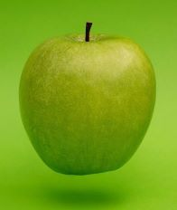

Apples are probably the easiest and most popular tree fruit to grow, offering delicious harvests for decades. Eating a crisp juicy apple straight from your own tree is a treat to be savoured. There are many varieties, each with their own unique flavour, and trees come in a range of sizes, for even the smallest garden. So whether you’re lucky enough to already have an apple tree, or would like to plant one, here is everything you need to know to enjoy delicious home-grown apples for years to come.
